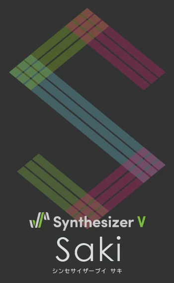
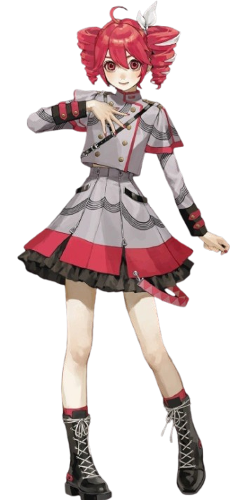

Synthesizer V is a singing voice synthesizer developed by Dreamtonics.
It allows users to create realistic singing by inputting lyrics and
melody, which the software then synthesizes into a singing voice using
advanced AI technology. Synthesizer V has gained popularity for its
high-quality voice banks and user-friendly interface. It is like
VOCALOID and it is also paid but you can enjoy a free version of their
software, Synthesizer V Studio Basic, which has limited features
compared to the full version, Synthesizer V Studio Pro.
Synthesizer V is known for its high-quality voice banks, which are
created using advanced AI technology and deep learning techniques. This
allows for more natural and expressive singing compared to previous
generations of vocal synthesis software.
Notable Synthesizer V characters include Eleanor Forte, Eleanor Forte
AI, Saki, Saki AI, and Kasane Teto and Koharu Rikka. Each character has
its own unique voice and personality.
───── ⋆⋅☆⋅⋆ ─────
Click them to find out more ^ - ^


───── ⋆⋅☆⋅⋆ ─────
How to download Synth V!
To download Synth V, follow these steps:
Visit the official Synth V website.
Choose the version you want to download (Basic or Pro).
Click on the download link and follow the instructions.
➛ Official Download Page